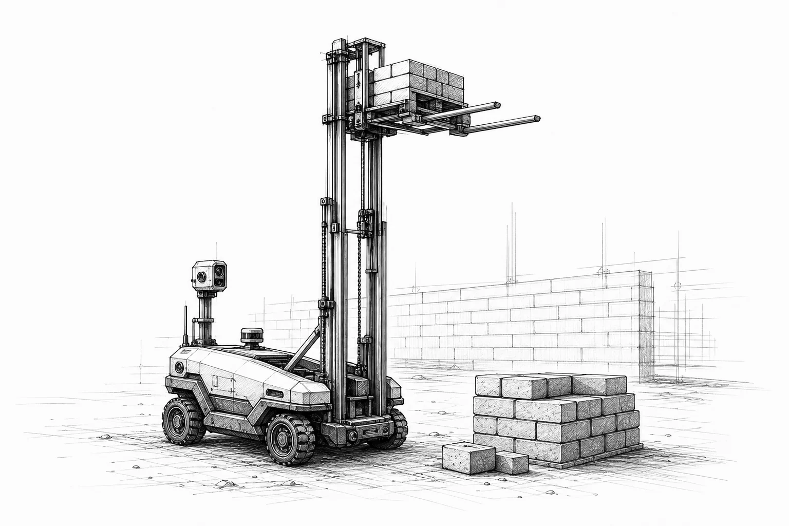
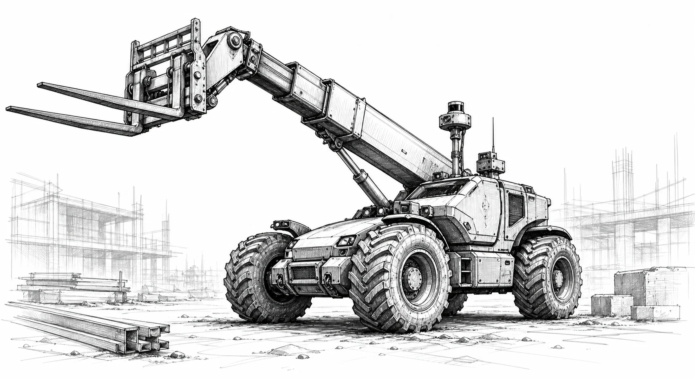
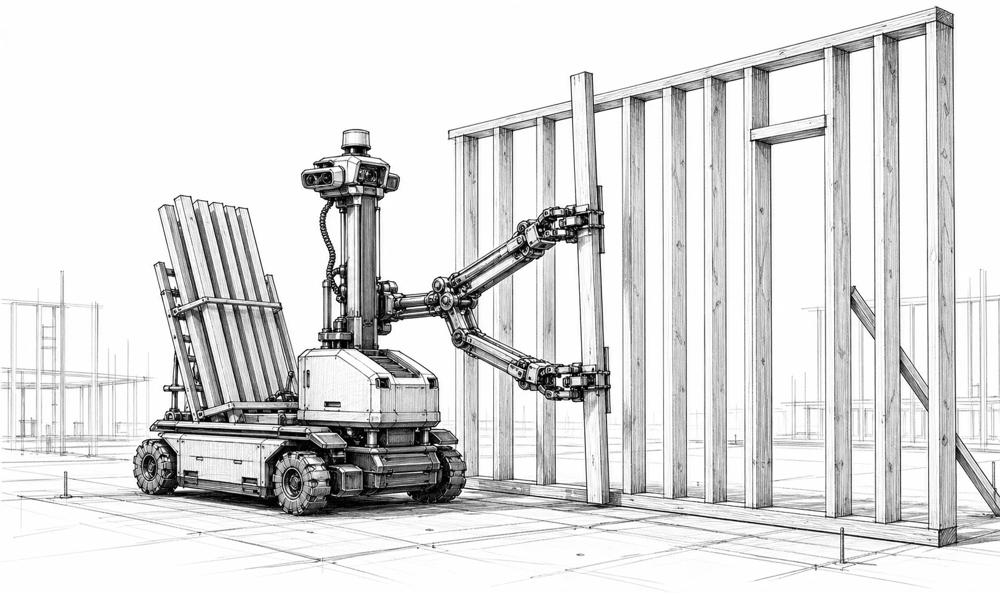
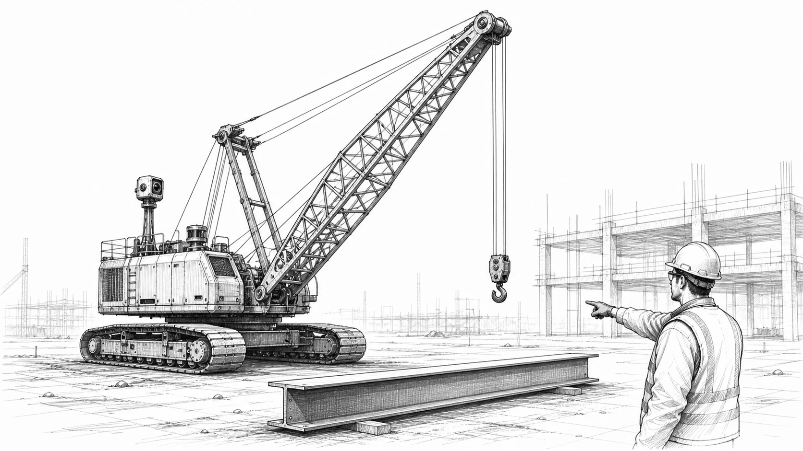
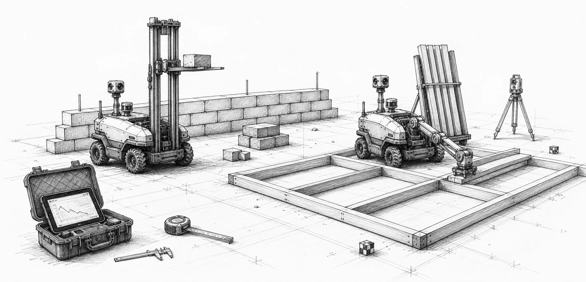

01
Leia
Compact brick lift robot
Leia lays bricks. Yes, we noticed. The robot is roughly 3 by 3 by 3 feet, with a 6.5-foot mast that lifts one brick at a time.

Autonomous construction robotics
IronPaw builds task-specific construction robots and measures them against the real cost drivers on jobsites: labor gaps, idle equipment, rework, and slow material flow.
Each robot owns a repeatable trade motion. Together they make a jobsite look more like a factory.

Compact brick lift robot
Leia lays bricks. Yes, we noticed. The robot is roughly 3 by 3 by 3 feet, with a 6.5-foot mast that lifts one brick at a time.

Ground-frame assembly robot
Cub is also roughly 3 by 3 by 3 feet. It lays studs into wall frames on the ground, then the finished frame can be lifted into place.
Autonomous telehandler
Grizzly moves pallets, steel, trusses, and tools without waiting for a human operator to be in the right machine at the right minute.

Autonomous crane
Polar turns heavy lift into a software-controlled operation with repeatable sensing, rigging discipline, and calm precision.

IronPaw's mission is to reduce the cost of construction. Each bot is judged by measured field work: repeatability, cycle time, handoffs, uptime, and the cost of getting useful work installed.
The goal is not theater. The goal is a lower cost per installed wall, frame, lift, and material move, proven through repeatable work in the field.
The jobsite has repeated motions, measurable geometry, and brutal labor gaps. The winning robot does not need to look human. It needs to do the trade motion safely, all day.
Leia creates walls, Cub creates frames, Grizzly moves materials, and Polar handles lift. Each machine increases the value of the others.
Lower the cost curve
We are building durable machines, collecting evidence, and pushing construction toward lower cost, higher repeatability, and less waiting between trades.
Start the conversation